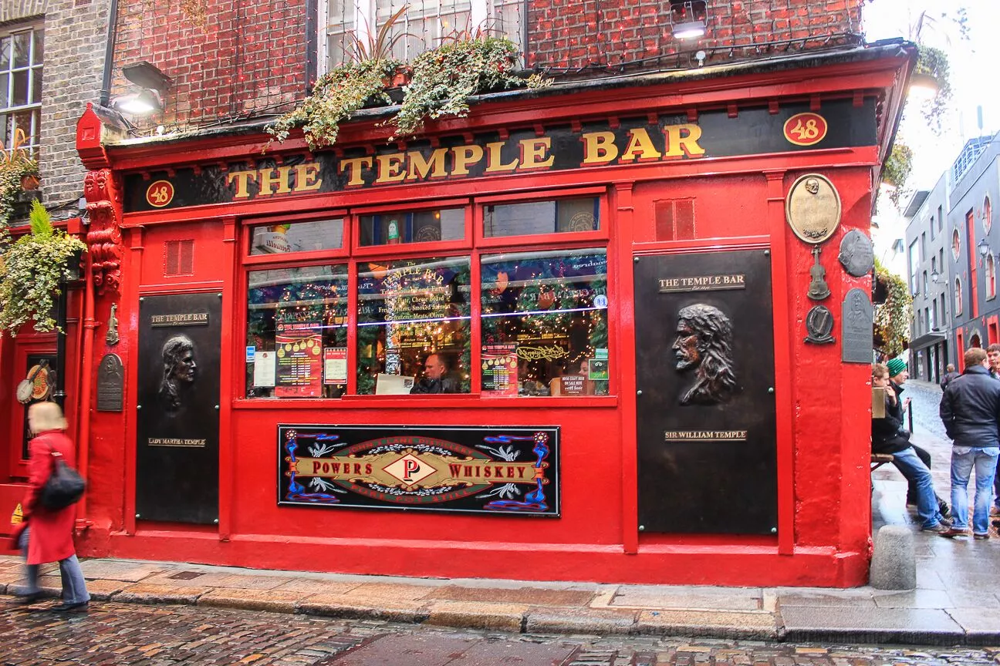

TEMPLE BAR
El Temple Bar es uno de los pubs más populares en el distrito y que lleva su mismo nombre. Tienen una excelente selección de cerveza artesanal local y regularmente hay shows con música tradicional irlandesa. Los precios son bastante elevados y allí no vas a encontrar más que turistas. Si buscas experimentar la vida de pub auténticamente irlandesa, éste no es el lugar más adecuado. Establecido en 1840, el pub es uno de los más visitados y fotografiados en el país.